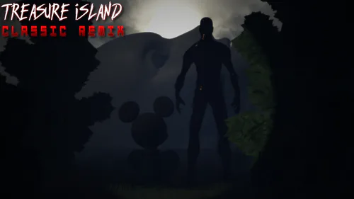
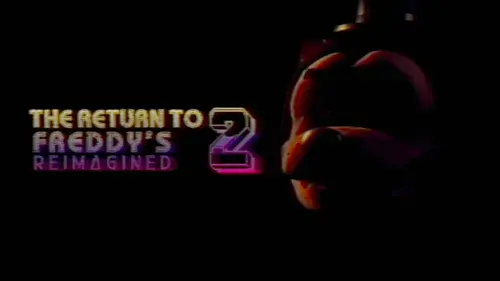

Treasure Island: Classic Remix

In the original Clickteam version, I handled UI, menus, and the creation of a demo. In the new Godot version I've done a lot more, including a large amount of coding, UI, a captioning (subtitles/closed captions) system, and a navigation system for a specific point-and-click section of the game.
The Return to Freddy's 2 - Reimagined

I was brought on the team fairly late in development for captioning, but then I was allowed to overhaul multiple systems and menus before release. I continued making quality-of-life updates for the game through patches until v1.3.0.
TRTF 2 - Tacoman Edition

I was brought on the team late in development to do captions for in-game calls, and similarly to 2R, I was allowed to do additional UI work.